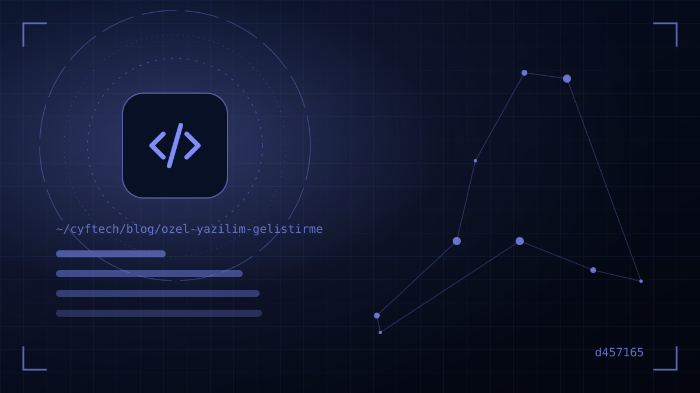

Excel files linked to each other, three different off-the-shelf programs holding the same data separately, the team preparing the same report by hand at the end of every month. If this sounds familiar, the problem is usually not your staff but software that doesn’t fit your business.
Custom software development means software designed around a business’s own processes and written solely for that business: an ordering portal, a mobile app for a field team, a production tracking system or a management screen that brings several programs together in one panel. It may sound like a luxury for large companies, but started with the right scope it can be one of the most efficient investments for SMEs too.
In this article we explain when custom software is really needed, when an off-the-shelf solution is the smarter choice, the steps a project goes through from start to finish, what determines the cost and the clauses you must have written into the contract. We’ll also share experience gained while developing our own products and client projects.
When do you need custom software? Five clear signs
Not every business needs custom software. There are mature, affordable off-the-shelf solutions for many areas such as accounting, e-invoicing, email and CRM; writing them from scratch is usually a waste of money and time. The situations where custom software should be on the table, however, are quite distinct:
- Your process is your competitive advantage. If the way you prepare quotes, plan production or serve customers sets you apart from competitors, forcing that process into an off-the-shelf program’s mould forces your advantage into it too.
- Your data is split into islands. Sales in one program, stock in another, the field team on WhatsApp, reports in Excel. If someone merges the same data by hand every month, automation usually pays for itself quickly.
- You use off-the-shelf software with lots of “buts”. If workarounds like “we use this field for something else” or “we export this report and fix it” have piled up, your business is adapting to the software rather than the software to your business.
- Licence costs are growing. If per-user subscriptions multiply with headcount, the total cost over a few years can exceed the investment in a custom solution.
- You need a screen open to customers or dealers. Digital services offered under your brand, such as a dealer ordering portal, a customer tracking panel or an appointment system, usually don’t deliver the experience you want with off-the-shelf tools.
Off-the-shelf or custom software? A comparison
The decision is rarely black and white. The table below summarises the typical differences between the two approaches:
| Criterion | Off-the-shelf software (package / SaaS) | Custom software |
|---|---|---|
| Initial cost | Low; monthly or annual subscription | High; project-based investment |
| Time to deploy | Days to a few weeks | A few months, depending on scope |
| Fit with processes | You adapt to the software | The software adapts to you |
| Long-term cost | Grows as users and modules increase | Predictable with a maintenance and development budget |
| Ownership and data | On the provider’s platform | With you, as per the contract |
| Integration | As far as the provider allows | As far as you need |
In practice the healthiest route is often a hybrid approach: using off-the-shelf solutions for standard tasks such as accounting, e-invoicing and email; building the process that differentiates your business as custom software; and connecting the two through integration. We covered a similar dilemma on the web side in our article WordPress or custom software as well.
Leave standard work to off-the-shelf tools and the work that makes you different to custom software.
The custom software development process step by step
A well-managed project has few surprises, because every stage has an output and an approval point. A typical process works like this:
- 1. Discovery and analysis — The current process is observed on site, users are interviewed, and problems and goals are put in writing. Output: a scope document, user roles and a prioritised feature list.
- 2. Defining the MVP scope — Instead of cramming everything into the first release, the core features that add the most value to the business are selected. This is where “must-have” is separated from “can come later”.
- 3. UX and interface design — Screens are prepared first as wireframes, then as a clickable prototype. Having users try the prototype before any code is written catches the most expensive mistakes at the cheapest stage.
- 4. Architecture and technology choice — Web, mobile or desktop; the database, hosting, security and integrations are finalised.
- 5. Development in sprints — Work is usually split into two-week chunks. A working version is shown at the end of each sprint; feedback is reflected immediately in the next sprint.
- 6. Testing and acceptance — Functional tests, device and browser tests, and load and security checks are carried out. The final step is your own acceptance test with real scenarios.
- 7. Launch, training and transition — Data from the old system is migrated, users are trained and, if necessary, the old and new systems run in parallel for a short period.
- 8. Maintenance and continuous improvement — Software doesn’t end on launch day; a regular maintenance plan is needed for security updates, bug fixes and new requirements.
It is not surprising that more than half the time goes to non-coding work (analysis, design, testing, training); on the contrary, it is a sign of a healthy project.
Web, mobile or desktop? Choosing the platform
The platform custom software runs on should be determined by the usage scenario:
Web app
Accessible from anywhere via a browser, no installation required, updates applied in one place. It is often the first choice for internal systems such as panels, portals and CRM-like tools. You can see our work in this area on our web solutions page.
Mobile app
If you have field teams, couriers and service staff, or a service you will offer your customers, you need a mobile app. Phone features such as the camera, location and notifications come into play here. For details, see our mobile app service.
Desktop app
If you need to work directly with devices such as cash registers, scales and barcode readers, keep working during internet outages or process large volumes of data, a Windows application is still a strong option. For the full comparison, read our desktop or web application article.
In many projects the right answer is “all of them”: a web panel, a mobile app and, where needed, a desktop client all running on a shared server and database. What matters is planning this structure from the outset.
What determines the cost of custom software?
There is no single answer to “How much does software cost?”, just as there is none to “How much does a house cost?”. The main items that determine the price are:
- Scope and number of screens: How many user roles, screens and workflows are there?
- Number of platforms: Web only, or iOS / Android and desktop as well?
- Integrations: Connections to external systems such as accounting software, e-invoice providers, virtual POS, SMS, shipping and banks.
- Data migration: Cleaning and transferring data from the old system or scattered Excel files.
- Security and performance requirements: Personal data processing, authorisation, logging, high numbers of concurrent users.
- Maintenance and hosting: Server, backups, monitoring and an annual maintenance budget.
The most effective way to keep the budget under control is to start with a small but working MVP and plan later phases based on real usage data. Asking for a system that “does everything” in one go multiplies both cost and risk.
What the contract should cover: source code, rights, maintenance
Most disputes in custom software projects stem not from technical issues but from the contract. Clarify these clauses before signing the quote:
- Source code and intellectual property: Whether the source code will be handed over to you and which usage rights are transferred must be stated clearly. Under Turkish Law No. 5846 on Intellectual and Artistic Works, contracts concerning economic rights must be in writing and the transferred rights must be listed individually.
- Scope and change management: The scope document should be an annex to the contract; how new requests arising during the project will be priced and how they affect the timeline should be agreed up front.
- Acceptance criteria: Which tests must be passed for a phase to count as “done” should be in writing.
- Payment plan: Tying payments to delivered and approved phases is the fairest method for both parties.
- Domain, server and accounts: Having the domain, server, app store and cloud accounts opened in your name makes it easier to switch companies later.
- Warranty and maintenance: The free bug-fix period after launch, the maintenance fee afterwards and response times (SLA).
- Personal data: If the software processes personal data, the roles and data security obligations of the developer and the hosting company under KVKK (Turkish Personal Data Protection Law) must be defined.
How do you choose the right software company?
The lowest quote is often the most expensive outcome; but the highest quote doesn’t guarantee quality either. When comparing companies, look for answers to these questions:
- Do they have live, working projects? Ask for products that are actually in use and references you can contact, not screenshots.
- Do they listen first? A company that tries to understand your process at the first meeting instead of giving a price is the one most likely to define the right scope.
- How do they handle security? They should give clear answers about authorisation, encryption, backups and current threat lists (e.g. OWASP Top 10).
- Who will provide support after delivery? Is the team that builds the project the same one that will maintain it, and what is the communication channel?
- Do they provide documentation? Software delivered without installation, architecture and user documentation creates dependency on the company.
At CYF Tech, alongside client projects we develop our own products: KATSİS for apartment and residential complex management and RestaurantBill for multi-branch restaurants, systems with web, mobile and desktop components that are used in the field every day. You can explore these products on the projects page, and our client work in our references.
A good software partner asks not what you want, but what you need.
- Are the problem you want to solve and a measurable goal in writing?
- Have the MVP scope and later phases been separated?
- Are user roles and priority screens defined?
- Has a list of systems to integrate with been drawn up?
- Is ownership of the source code, rights and accounts clear in the contract?
- Are acceptance criteria and the payment plan tied to phases?
- Are post-launch maintenance, backups and support scope defined?
Frequently asked questions
How long does custom software development take?
It depends on the scope. A small panel automating a single workflow can go live in a few weeks; a mid-sized system consisting of a web panel and a mobile app usually takes a few months. What shortens the timeline most is a clear scope and fast feedback.
Is custom software or off-the-shelf software more expensive?
Custom software is more expensive at the start. However, with off-the-shelf solutions that charge licences per user and grow with add-on modules, the total cost over a few years can exceed a custom solution. The comparison should be based on the total cost of ownership over at least three years.
Will I own the source code?
That depends entirely on the contract. Under the Turkish Law on Intellectual and Artistic Works, the transfer of economic rights must be in writing and the transferred rights must be specified individually. Have the delivery of the source code and usage rights written explicitly into the contract.
Does custom software make sense for a small business?
Yes, if significant time is spent on repetitive tasks or off-the-shelf software doesn’t fit your process. Starting with a small, focused MVP keeps both risk and budget limited.
What happens after the software is delivered?
Software needs regular maintenance: security updates, bug fixes, server and backup monitoring, and improvements for new requirements. That is why the scope and fee for post-launch support should be set in the contract from the start.
Final word
When done at the right time and with the right scope, custom software development doesn’t just save your business time; it lets you make data-driven decisions and do more work with the same team as you grow. The keys to success are clarifying the problem before writing code, starting small and growing based on real usage, and setting up a solid contract from the very beginning.
If you’re not sure whether the project you have in mind needs custom software, let’s assess it together. We’ll listen to your process and recommend the most suitable route, including an off-the-shelf solution if that’s what fits: get in touch with us.